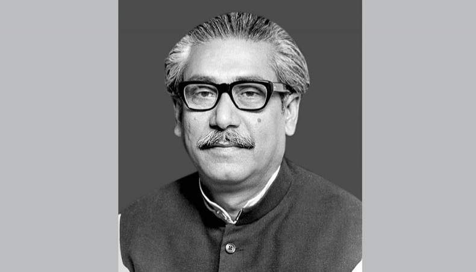

Bngabondu Shek Mujibur Rahman

Sheikh Mujibur Rahman, often shortened as Sheikh Mujib or Mujib, was a Bangladeshi politician, statesman and Founding Father of Bangladesh who served as the first President and later as the Prime Minister of Bangladesh from 17 April 1971 until his assassination on 15 August 1975.
- Amid the coronavirus pandemic storming through the country, Bangladesh is commemorating the 45th anniversary of assassination of Sheikh Mujibur Rahman, its founder who was brutally murdered on Aug. 15, 1975.
- In honor of the country’s great leader, whose contribution to the people earned him the title “Father of the Nation,” the day is also marked as a national day of mourning.
- People also designated him as “Bangabandhu”, or “Friend of Bengal” for his devotion to the countrymen.
- Mujib struggled and inspired people to gain political autonomy for then-East Pakistan (now Bangladesh) and eventually became the central figure behind the 1971 Liberation War.
- He also served as the country’s first president and later as prime minister.
- Embracing Mujib at the Non-Aligned Summit in Algiers in 1973, then-Cuban leader Fidel Castro remarked: "I have not seen the Himalayas. But I have seen Sheikh Mujib.”
- Born to a Bengali Muslim family at a remote village Tungipara in mid-southern district of Gopalganj in the then-province of Bengal under the British India (now Bangladesh) on March 17, 1920, Mujib began his schooling at the age of seven at a local primary school.
- He obtained a bachelor of arts degree from Islamia College under Calcutta University in 1947.As a student at the college, Mujib started his political life in 1940 by joining the All India Muslim Students Federation and became actively involved in the movement for the creation of Pakistan.
- In 1943, he joined the Bengal provincial branch of All India Muslim League (popularly known as the Muslim League).
- In 1948, Mujib was admitted to the law department of Dhaka University but on March 26, 1949, then-university authorities expelled him on charges of “instigating” a movement launched by class four employees demanding rise in salaries and allowances.
- University authorities, however, withdrew the expulsion order after 61 years on Aug. 15, 2010 labelling it as “undemocratic and unjust”.
- In 1949, after two years of the partition and subsequent establishment of Pakistan, politicians of East Pakistan broke away from the Muslim League and established the All Pakistan Awami Muslim League, known as Awami Muslim League, with Mujib elected as one of the party's joint secretaries.
- On July 9, 1953, Sheikh Mujib was elected as the general secretary of the party.
- Later on October 1955 the word "Muslim" was dropped from the party name and it continued as Awami League. Sheikh Mujib was reelected general secretary and served the post until 1966 when he became president of the party.
- In the same year he launched his historic six-point demand that was also the charter of freedom of the Bengali nation.Landslide victory in 1970 elections
- Under his leadership, the Awami League secured a landslide victory in the 1970 general elections across Pakistan to form a one-party government.
- The Pakistan central government, however, refused to allow him to form the government and in March 1971 President Yahya Khan postponed the National Assembly session amid huge demonstrations in East Pakistan.
- On March 7, 1971, Mujib addressed a mammoth public rally in Dhaka where he called on the people to prepare for the struggle for independence. The historic speech was also recognized as part of the world’s documentary heritage by UNESCO in 2017.Loved people more than own life
- “Sheikh Mujib loved the countrymen more than his own life. He always fought for the political, economic and cultural emancipation of people,” Mujib’s long-term political cohort and former Commerce Minister Tofail Ahmed told Anadolu Agency.
- Ahmed added: “In his struggling life Mujib spent a total of 13 years in jail.”
- About the brutal assassination Ahmed said that “some ill-motivated army personnel in collaboration with some defeated external enemies killed Mujib.”